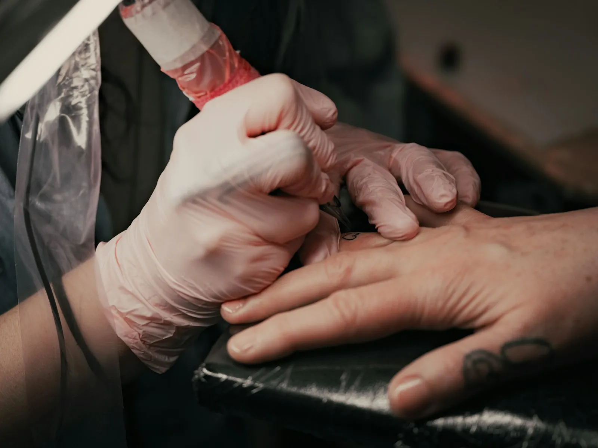
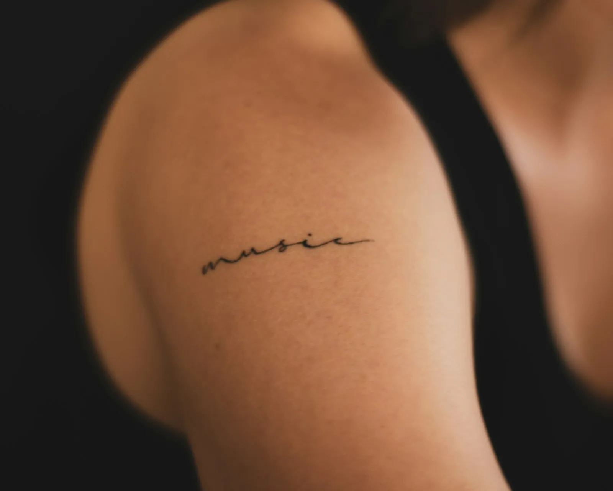
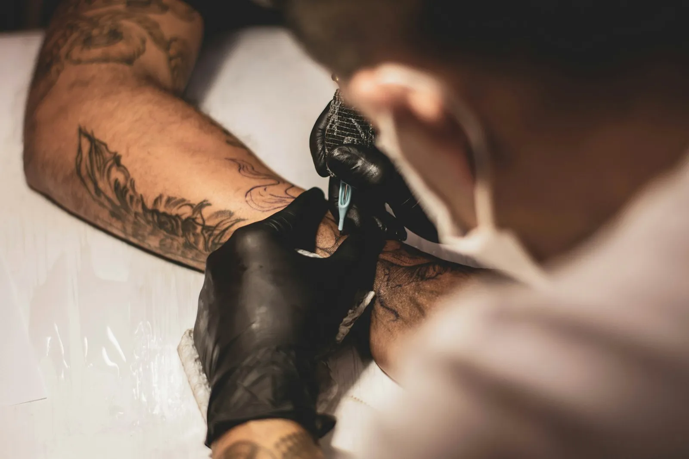
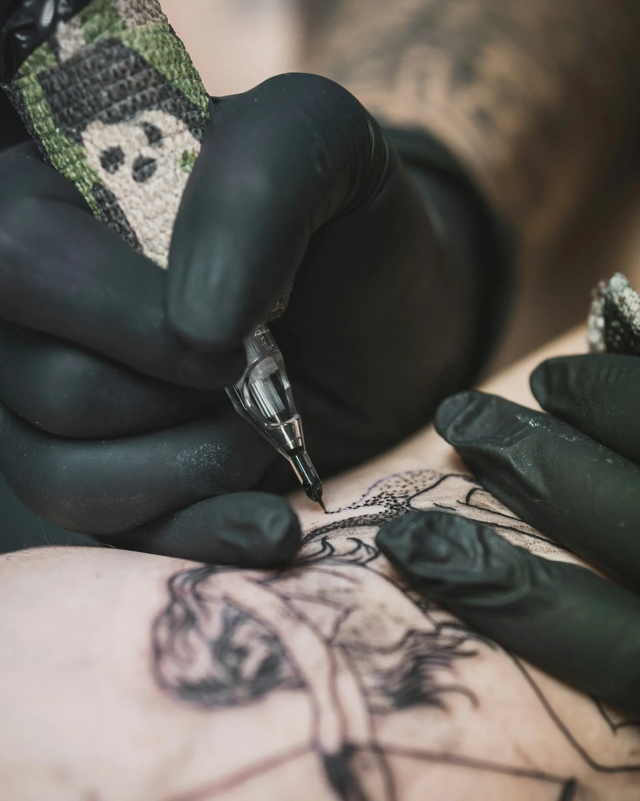
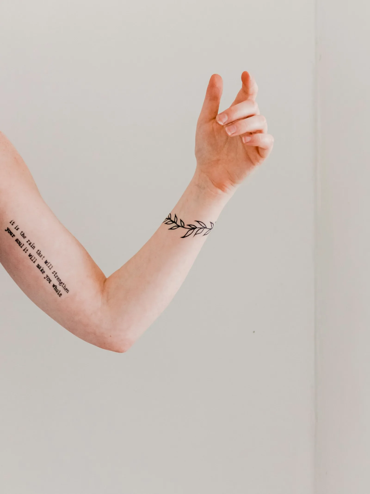
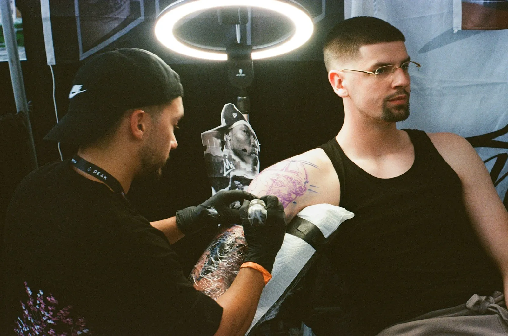
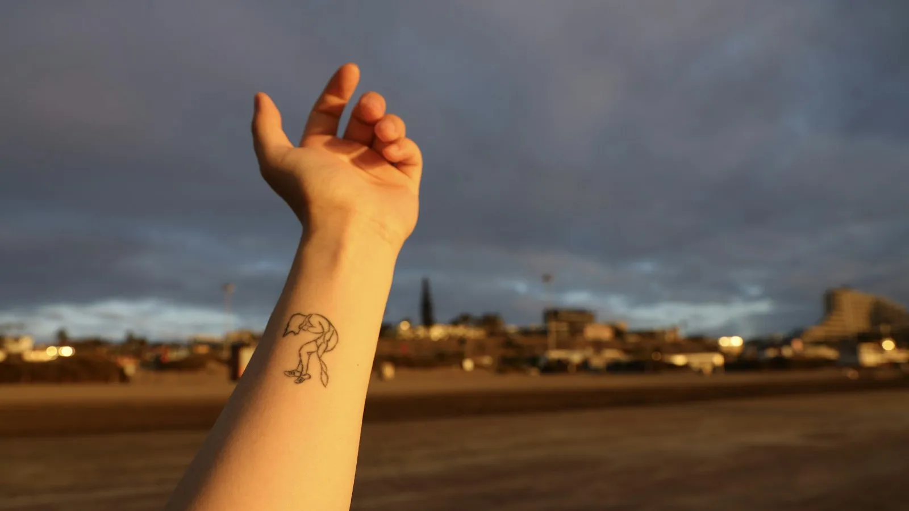
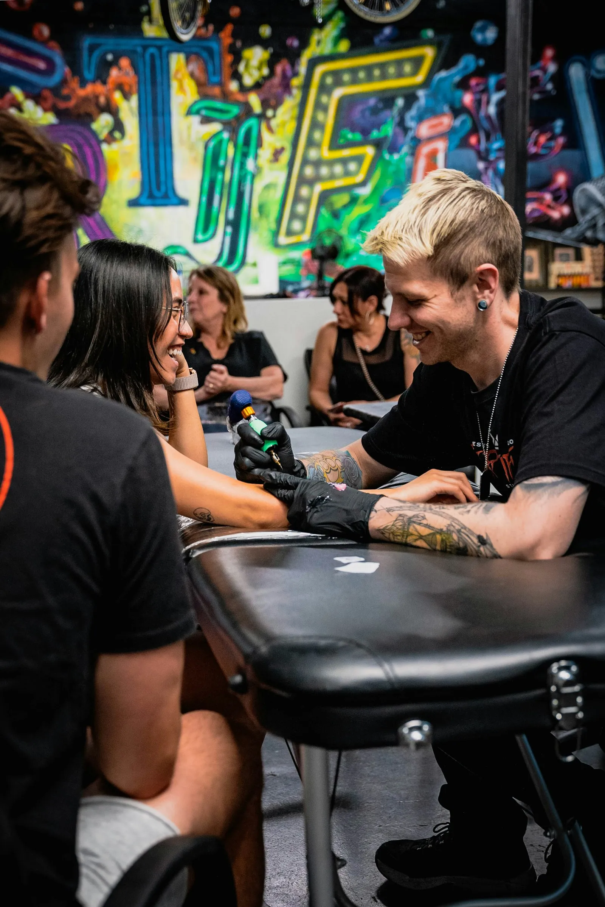
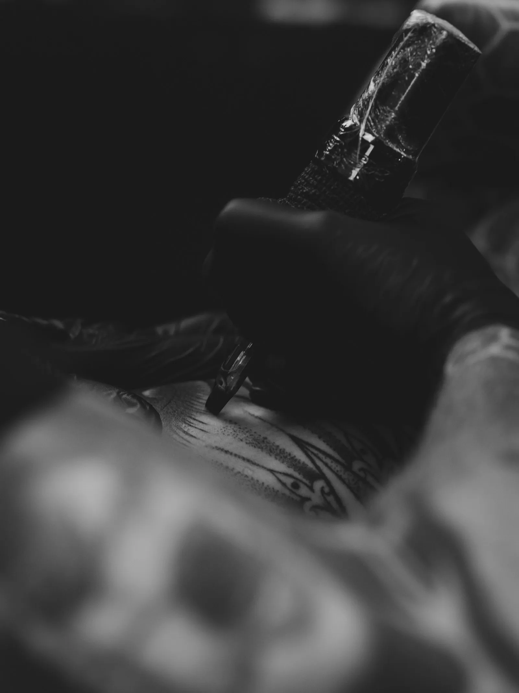

Werk
Een greep uit de studio
Klein en fijn, of groter met veel detail. Swipe door de beelden of gebruik de pijltjes.







Sunrise Skin Art zit aan de Leuvensesteenweg in Aarschot. Je komt op afspraak, je idee wordt rustig besproken en pas als het goed voelt, beginnen we.



Klein en fijn, of groter met veel detail. Swipe door de beelden of gebruik de pijltjes.




Veel mensen die hier binnenkomen, laten hun eerste tattoo zetten. Daarom gaat het stap voor stap, en kan je alles vragen wat je wil.
Een paar zinnen, een foto of een schets. Zeg erbij waar je hem wil en ongeveer hoe groot.
Je hoort wat haalbaar is en wat mooi blijft op lange termijn. Het ontwerp wordt aangepast tot het klopt.
Het ontwerp komt eerst als stencil op je huid. Pas als de plek goed zit, wordt er gezet.
Met duidelijke uitleg over verzorgen. Vragen achteraf? Stuur gerust een berichtje.

 eerst
eerstSchuif door de dagen na je afspraak. Je ziet wat er met je huid gebeurt en wat je best doet.
Een perfecte score uit 263 reviews op Google. Dat zegt meer dan wij zelf kunnen.
Je idee wordt besproken voor er een naald aan te pas komt. Ook als het je eerste tattoo is.
Werken op afspraak betekent geen wachtrij en geen haast tijdens je sessie.
Steriel materiaal, een propere werkplek en heldere uitleg voor thuis.
Stuur een berichtje met je idee. Je krijgt een antwoord met wat kan en wanneer er plaats is.

Ja, er wordt op afspraak gewerkt. Stuur je idee via WhatsApp of Instagram, dan krijg je een moment voorgesteld.
Helemaal niet. Breng een paar voorbeelden mee of vertel wat de tattoo voor jou betekent. Samen kom je tot een ontwerp dat bij je past.
Dat hangt af van de grootte, de plek en het detail. Je krijgt vooraf een duidelijke prijs, zodat je niet voor verrassingen staat.
Slaap goed, eet vooraf iets en drink genoeg water. Draag kleren waarmee de plek makkelijk bereikbaar is. Alcohol de dag ervoor laat je beter staan.
Stuur gerust een berichtje met een foto. Dan krijg je advies over hoe het verder geneest.
Ik maakte deze site voor Sunrise Skin Art zonder jullie al te kennen. De teksten haalde ik uit wat ik online over jullie vond, de foto's en de stijl koos ik zelf.
De echte site maak ik pas na een gesprek. Dan hoor ik wat jullie klanten altijd vragen, wat er anders moet en wat écht bij jullie past. Het resultaat wordt een stuk mooier en persoonlijker dan wat hier staat.
Een half uurtje, vrijblijvend. Jullie vertellen wat jullie willen, ik toon wat kan. Ook als jullie daarna niet verder willen, is dat helemaal oké.
De volledige site, op gsm, tablet en computer. Alles inbegrepen.
Hosting, domein en aanpassingen door mij. Liever zelf beheren? Dan betalen jullie niets per maand.
Geen voorschot. Jullie betalen pas als de site klaar is.
Stijn Vranken · Digital Impression · 0496 25 14 45 · info@digital-impression.be · digital-impression.be